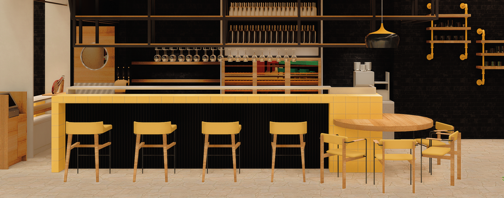
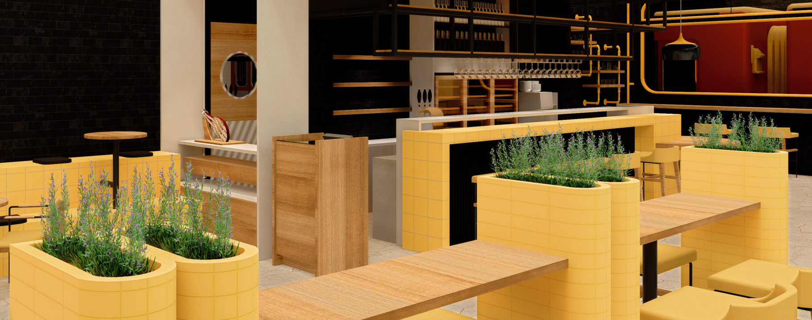
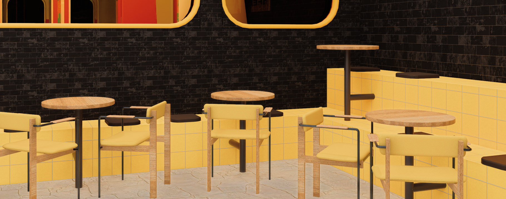
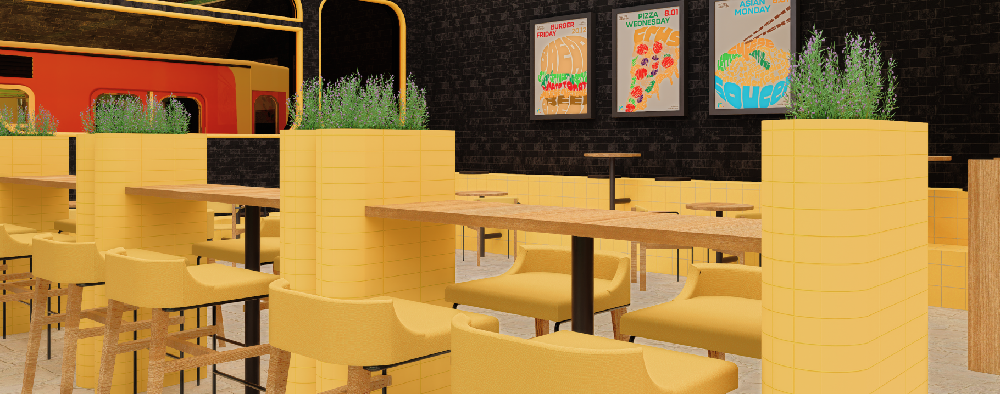
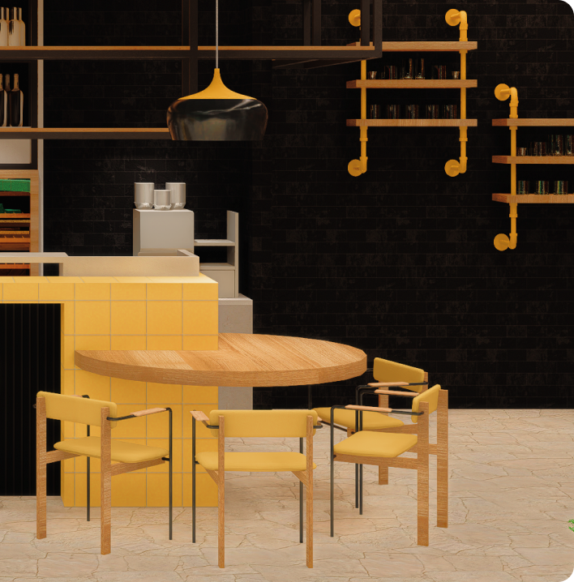
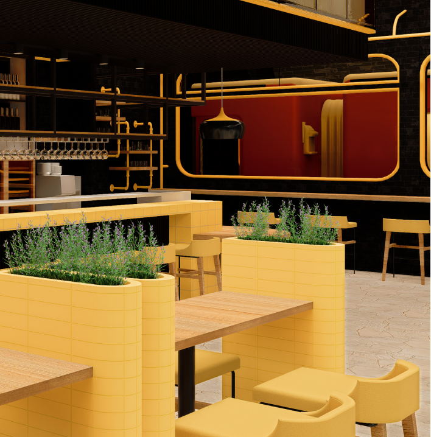
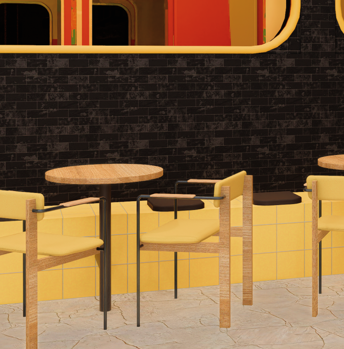
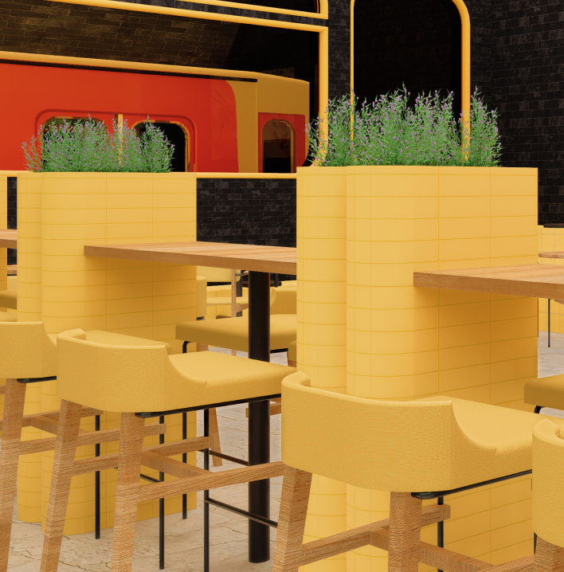
Французская кухня ассоциируется с желтым цветом благодаря использованию некоторых ингредиентов, таких как шафран и куркума, которые придают блюдам яркий оттенок и насыщенный вкус.
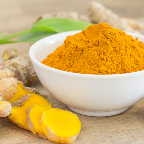
Куркума (лат. Cúrcuma) — травянистое растение из семейства имбирных
Кроме того, желтый цвет можно увидеть во французских десертах: крем-брюле и лимонный тарт, где яркие цитрусовые ноты создают ощущение свежести и солнечного света.
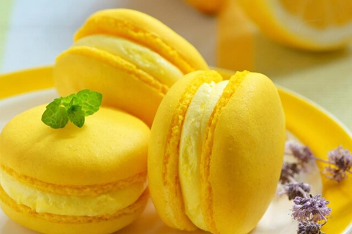
Макаро́н (фр. macaron) —французский десерт
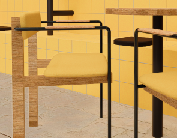
Основу фирменного стиля restro составляют поручни, окна и другие элементы, характерные для метро.
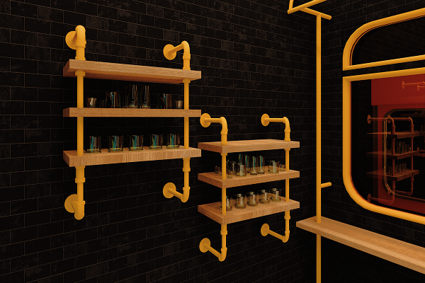
Барный стол у стены имеет 5 посадочных мест. Общая вместимость ресторана — 50.
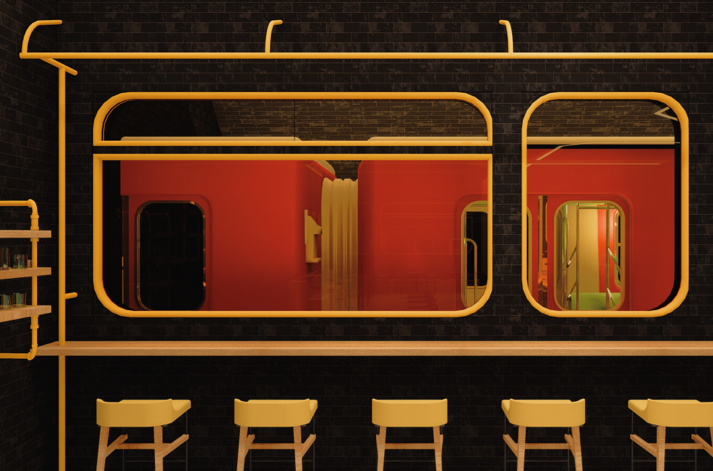
Она приходит один-два раза в месяц: в ней — новинки меню и приглашения на мероприятия.
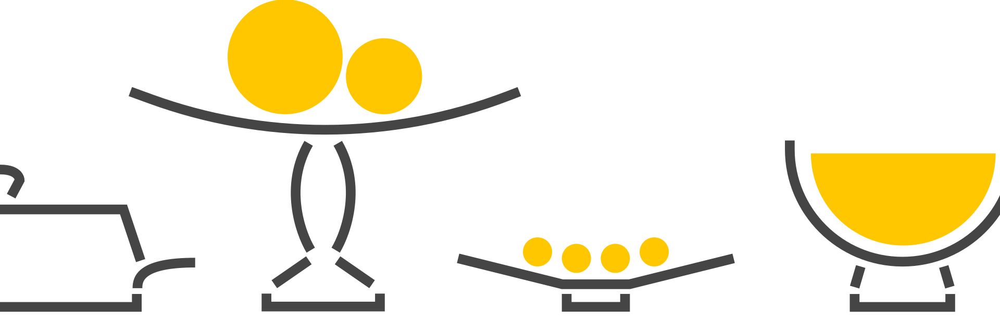